Changes in PRIMAP-hist v2.5.1_final compared to v2.5_final for Turkmenistan
2024-02-29
Johannes Gütschow
Change analysis for Turkmenistan for PRIMAP-hist v2.5.1_final compared to v2.5_final
Overview over emissions by sector and gas
The following figures show the aggregate national total emissions excluding LULUCF AR6GWP100 for the country reported priority scenario. The dotted linesshow the v2.5_final data.
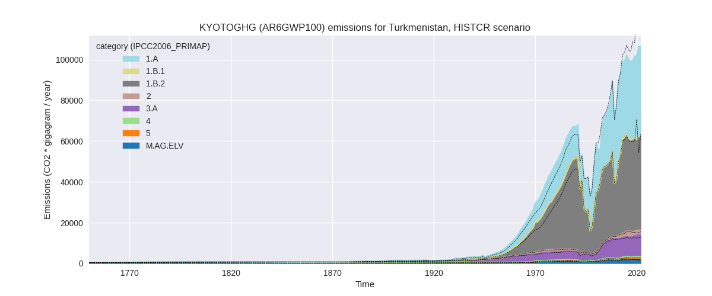
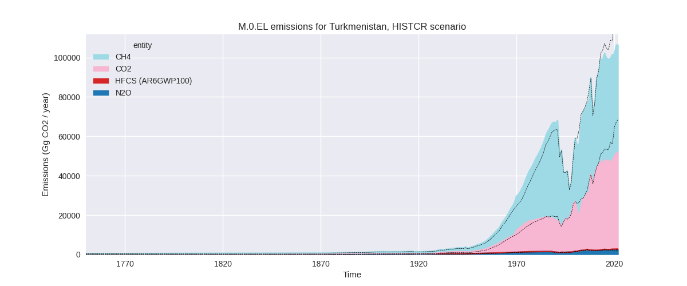

The following figures show the aggregate national total emissions excluding LULUCF AR6GWP100 for the third party priority scenario. The dotted linesshow the v2.5_final data.
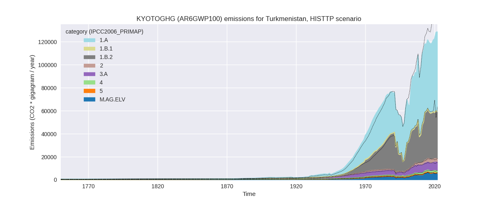
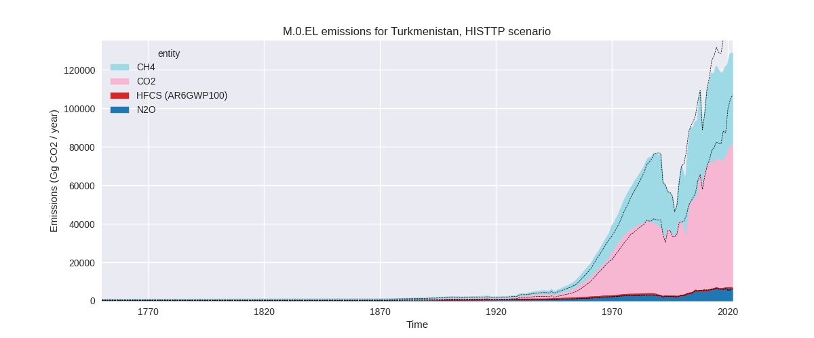
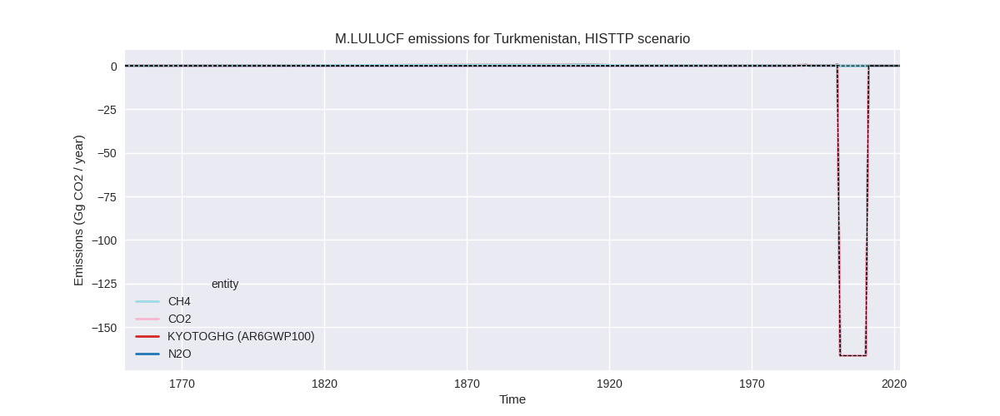
Overview over changes
In the country reported priority scenario we have the following changes for aggregate Kyoto GHG and national total emissions excluding LULUCF (M.0.EL):
- Emissions in 2022 have changed by -14.8%% (-18475.90 Gg CO2 / year)
- Emissions in 1990-2022 have changed by -4.1%% (-3195.99 Gg CO2 / year)
In the third party priority scenario we have the following changes for aggregate Kyoto GHG and national total emissions excluding LULUCF (M.0.EL):
- Emissions in 2022 have changed by -19.2%% (-30604.92 Gg CO2 / year)
- Emissions in 1990-2022 have changed by -7.0%% (-6807.70 Gg CO2 / year)
Most important changes per scenario and time frame
In the country reported priority scenario the following sector-gas combinations have the highest absolute impact on national total KyotoGHG (AR6GWP100) emissions in 2022 (top 5):
- 1: 1.A, CO2 with -16865.26 Gg CO2 / year (-27.5%)
- 2: 1.B.2, CH4 with -2425.68 Gg CO2 / year (-5.3%)
- 3: 3.A, CH4 with 598.90 Gg CO2 / year (6.3%)
- 4: 2, CO2 with -305.41 Gg CO2 / year (-14.1%)
- 5: M.AG.ELV, CO2 with 267.68 Gg CO2 / year (45.3%)
In the country reported priority scenario the following sector-gas combinations have the highest absolute impact on national total KyotoGHG (AR6GWP100) emissions in 1990-2022 (top 5):
- 1: 1.A, CO2 with -3744.24 Gg CO2 / year (-11.8%)
- 2: 1.B.2, CH4 with 312.28 Gg CO2 / year (0.9%)
- 3: M.AG.ELV, CO2 with 196.41 Gg CO2 / year (59.5%)
- 4: 2, CO2 with -132.12 Gg CO2 / year (-10.6%)
- 5: M.AG.ELV, N2O with 87.82 Gg CO2 / year (9.1%)
In the third party priority scenario the following sector-gas combinations have the highest absolute impact on national total KyotoGHG (AR6GWP100) emissions in 2022 (top 5):
- 1: 1.A, CO2 with -26317.15 Gg CO2 / year (-27.5%)
- 2: 1.B.2, CH4 with -3919.02 Gg CO2 / year (-9.2%)
- 3: M.AG.ELV, CH4 with -1029.06 Gg CO2 / year (-86.1%)
- 4: 3.A, CH4 with 493.45 Gg CO2 / year (7.6%)
- 5: 2, CO2 with -360.44 Gg CO2 / year (-15.7%)
In the third party priority scenario the following sector-gas combinations have the highest absolute impact on national total KyotoGHG (AR6GWP100) emissions in 1990-2022 (top 5):
- 1: 1.A, CO2 with -6013.97 Gg CO2 / year (-11.4%)
- 2: 1.B.2, CH4 with -812.38 Gg CO2 / year (-2.8%)
- 3: M.AG.ELV, CO2 with 196.41 Gg CO2 / year (59.5%)
- 4: M.AG.ELV, CH4 with -143.86 Gg CO2 / year (-29.4%)
- 5: 2, CO2 with -133.60 Gg CO2 / year (-10.8%)
Notes on data changes
Here we list notes explaining important emissions changes for the country. ’' means that the following text only applies to the TP time series, while means that it only applies to the CR scenario. Otherwise the note applies to both scenarios.
- 1.A, CO2: CDIAC 2023 data are lower than earlier releases for most years after 2000. This impacts both the TP and CR time series as country reported data only cover a few years.
- 2, CO2: EDGAR 8.0 emissions for 2.D (non-energy products from fuels and solvent use) are only about 1/3 of emissions in EDGAR 7.0 leading to much lower IPPU emissions in PRIMAP-hist.
- 1.B.2, CH4: EDGAR 8.0 emissions show much less fluctuations in the last years than EDGAR 7.0. This leads to lower 2022 emissions.
Changes by sector and gas
For each scenario and time frame the changes are displayed for all individual sectors and all individual gases. In the sector plot we use aggregate Kyoto GHGs in AR6GWP100. In the gas plot we usenational total emissions without LULUCF. ## country reported scenario
2022
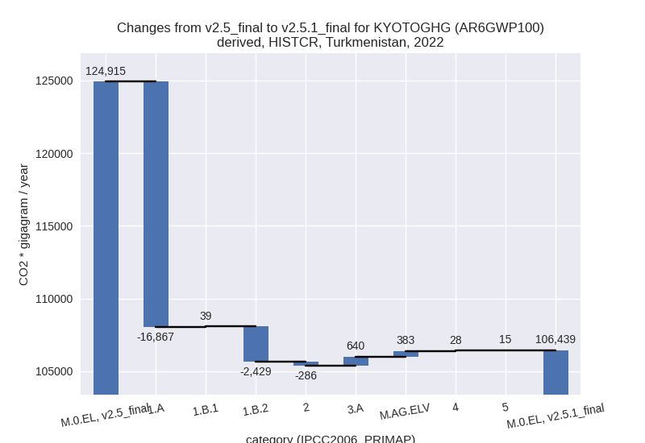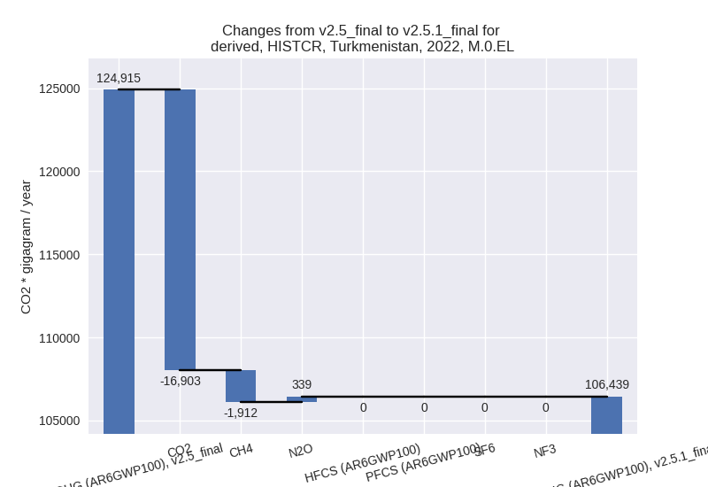
1990-2022
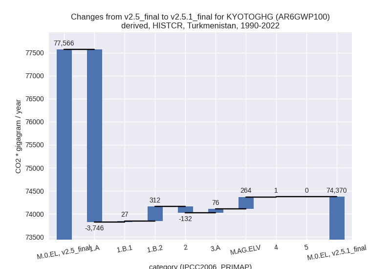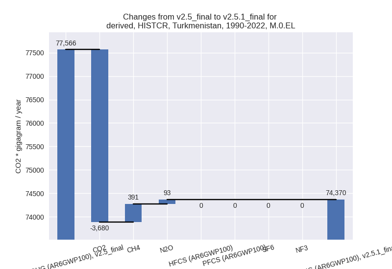
third party scenario
2022
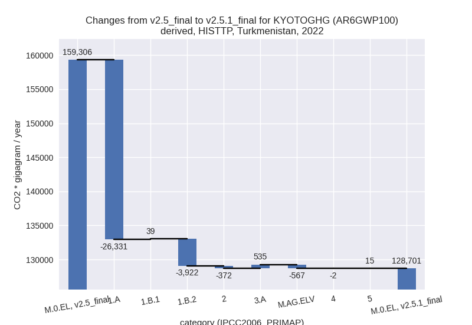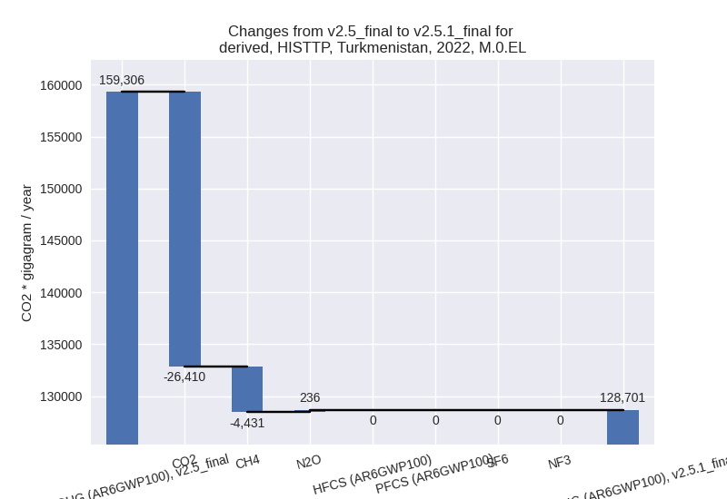
1990-2022
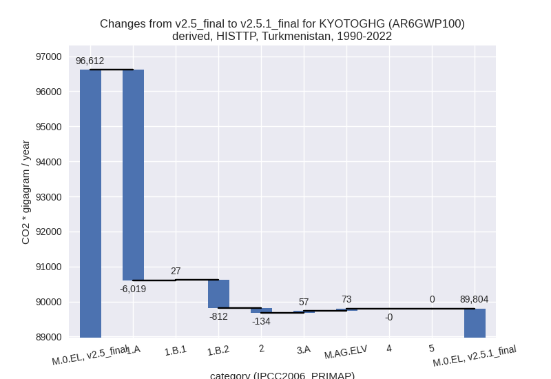
Detailed changes for the scenarios:
country reported scenario (HISTCR):
Most important changes per time frame
For 2022 the following sector-gas combinations have the highest absolute impact on national total KyotoGHG (AR6GWP100) emissions in 2022 (top 5):
- 1: 1.A, CO2 with -16865.26 Gg CO2 / year (-27.5%)
- 2: 1.B.2, CH4 with -2425.68 Gg CO2 / year (-5.3%)
- 3: 3.A, CH4 with 598.90 Gg CO2 / year (6.3%)
- 4: 2, CO2 with -305.41 Gg CO2 / year (-14.1%)
- 5: M.AG.ELV, CO2 with 267.68 Gg CO2 / year (45.3%)
For 1990-2022 the following sector-gas combinations have the highest absolute impact on national total KyotoGHG (AR6GWP100) emissions in 1990-2022 (top 5):
- 1: 1.A, CO2 with -3744.24 Gg CO2 / year (-11.8%)
- 2: 1.B.2, CH4 with 312.28 Gg CO2 / year (0.9%)
- 3: M.AG.ELV, CO2 with 196.41 Gg CO2 / year (59.5%)
- 4: 2, CO2 with -132.12 Gg CO2 / year (-10.6%)
- 5: M.AG.ELV, N2O with 87.82 Gg CO2 / year (9.1%)
Changes in the main sectors for aggregate KyotoGHG (AR6GWP100) are
- 1: Total sectoral emissions in 2022 are 90142.38 Gg
CO2 / year which is 84.7% of M.0.EL emissions. 2022 Emissions have
changed by -17.6% (-19256.38 Gg CO2
/ year). 1990-2022 Emissions have changed by -5.1% (-3406.19 Gg CO2 / year). For 2022
the changes per gas
are:
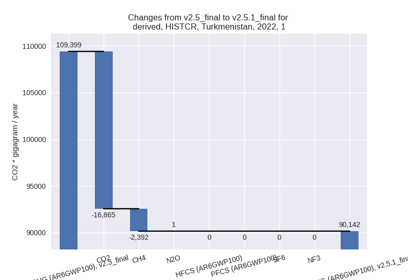
For 1990-2022 the changes per gas are:
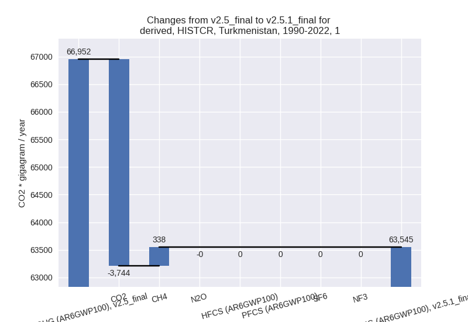
The changes come from the following subsectors:- 1.A: Total sectoral emissions in 2022 are 44465.49
Gg CO2 / year which is 49.3% of category 1 emissions. 2022 Emissions
have changed by -27.5% (-16866.51 Gg
CO2 / year). 1990-2022 Emissions have changed by -11.7% (-3745.70 Gg CO2 / year). For 2022
the changes per gas
are:
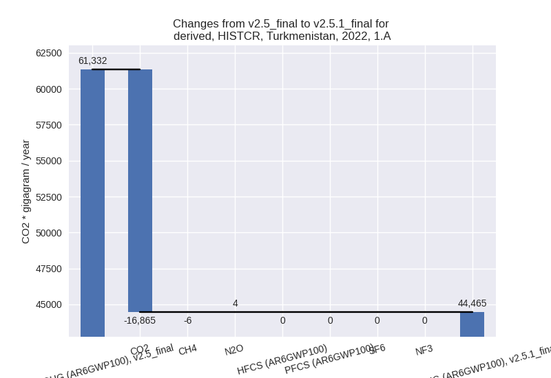
For 1990-2022 the changes per gas are:
There is no subsector information available in PRIMAP-hist. - 1.B.1: Total sectoral emissions in 2022 are 39.16
Gg CO2 / year which is 0.0% of category 1 emissions. 2022 Emissions have
changed by inf% (39.16 Gg CO2 /
year). 1990-2022 Emissions have changed by inf% (27.35 Gg CO2 / year). For 2022 the
changes per gas
are:
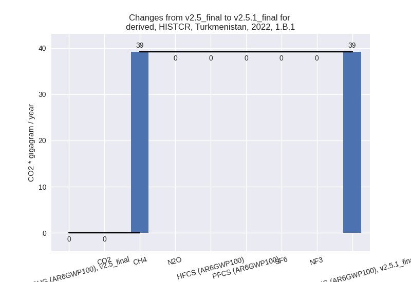
For 1990-2022 the changes per gas are:
There is no subsector information available in PRIMAP-hist. - 1.B.2: Total sectoral emissions in 2022 are
45637.74 Gg CO2 / year which is 50.6% of category 1 emissions. 2022
Emissions have changed by -5.1%
(-2429.02 Gg CO2 / year). 1990-2022 Emissions have changed by 0.9% (312.16 Gg CO2 / year). For 2022 the
changes per gas
are:
There is no subsector information available in PRIMAP-hist.
- 1.A: Total sectoral emissions in 2022 are 44465.49
Gg CO2 / year which is 49.3% of category 1 emissions. 2022 Emissions
have changed by -27.5% (-16866.51 Gg
CO2 / year). 1990-2022 Emissions have changed by -11.7% (-3745.70 Gg CO2 / year). For 2022
the changes per gas
are:
- 2: Total sectoral emissions in 2022 are 2377.72 Gg
CO2 / year which is 2.2% of M.0.EL emissions. 2022 Emissions have
changed by -10.7% (-285.93 Gg CO2 /
year). 1990-2022 Emissions have changed by -8.2% (-131.53 Gg CO2 / year). For 2022
the changes per gas
are:
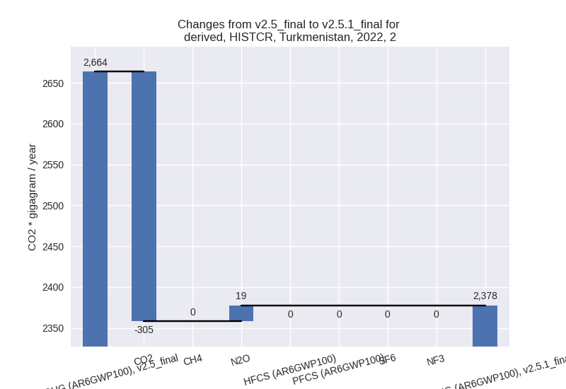
For 1990-2022 the changes per gas are: - M.AG: Total sectoral emissions in 2022 are 12902.06
Gg CO2 / year which is 12.1% of M.0.EL emissions. 2022 Emissions have
changed by 8.6% (1023.41 Gg CO2 /
year). 1990-2022 Emissions have changed by 4.1% (340.43 Gg CO2 / year). For 2022 the
changes per gas
are:
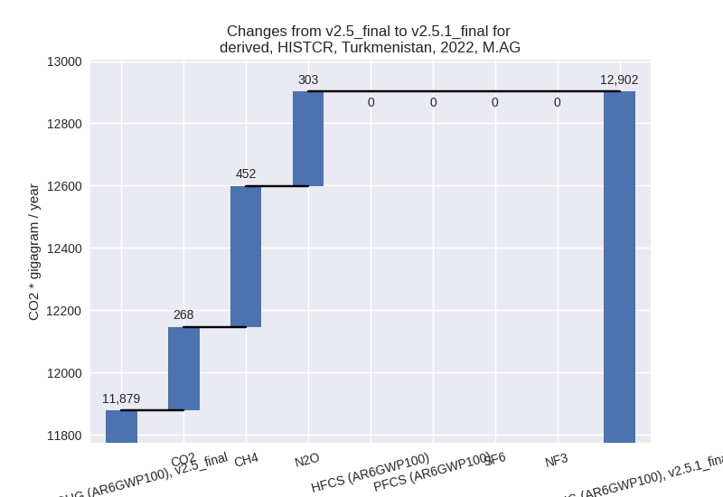
For 1990-2022 the changes per gas are:
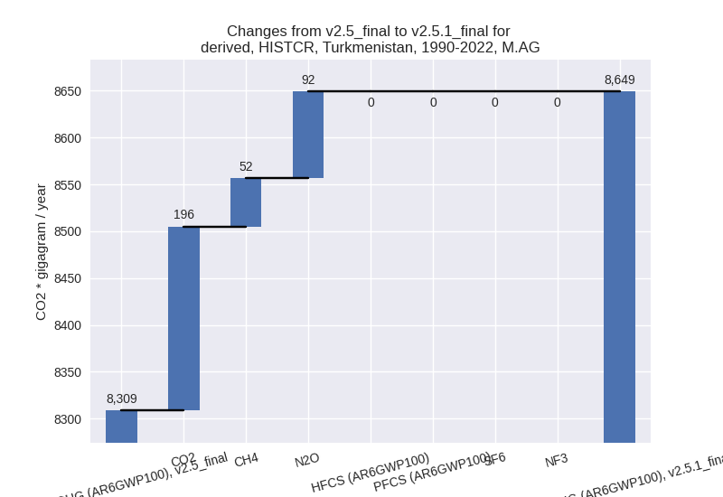
The changes come from the following subsectors:- 3.A: Total sectoral emissions in 2022 are 10555.93
Gg CO2 / year which is 81.8% of category M.AG emissions. 2022 Emissions
have changed by 6.5% (640.06 Gg CO2
/ year). 1990-2022 Emissions have changed by 1.1% (76.41 Gg CO2 / year). For 2022 the
changes per gas
are:
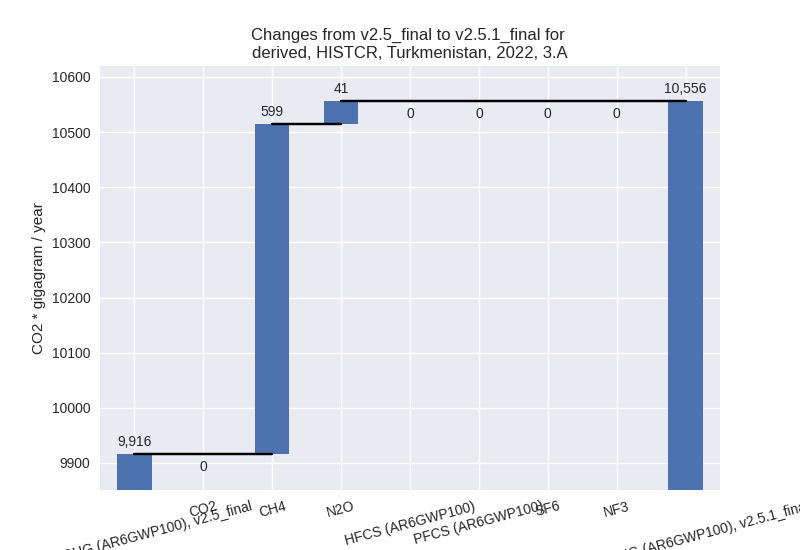
There is no subsector information available in PRIMAP-hist. - M.AG.ELV: Total sectoral emissions in 2022 are
2346.12 Gg CO2 / year which is 18.2% of category M.AG emissions. 2022
Emissions have changed by 19.5%
(383.35 Gg CO2 / year). 1990-2022 Emissions have changed by 19.3% (264.02 Gg CO2 / year). For 2022 the
changes per gas
are:
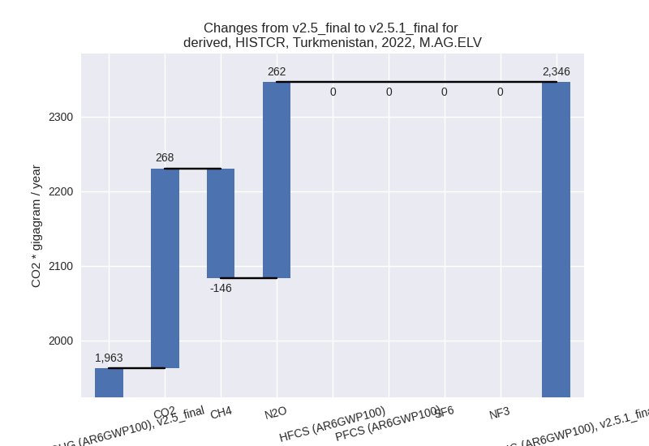
For 1990-2022 the changes per gas are:
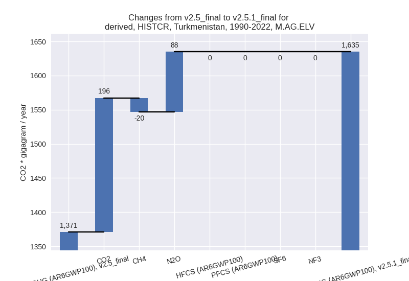
There is no subsector information available in PRIMAP-hist.
- 3.A: Total sectoral emissions in 2022 are 10555.93
Gg CO2 / year which is 81.8% of category M.AG emissions. 2022 Emissions
have changed by 6.5% (640.06 Gg CO2
/ year). 1990-2022 Emissions have changed by 1.1% (76.41 Gg CO2 / year). For 2022 the
changes per gas
are:
- 4: Total sectoral emissions in 2022 are 798.25 Gg
CO2 / year which is 0.7% of M.0.EL emissions. 2022 Emissions have
changed by 3.6% (27.54 Gg CO2 /
year). 1990-2022 Emissions have changed by 0.1% (0.83 Gg CO2 / year). For 2022 the
changes per gas
are:
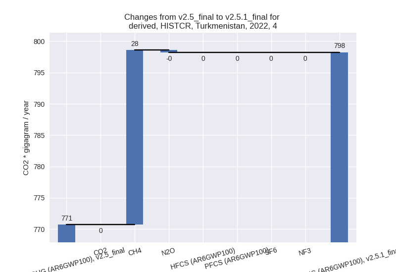 - 5: Total sectoral emissions in 2022 are 218.87 Gg
CO2 / year which is 0.2% of M.0.EL emissions. 2022 Emissions have
changed by 7.6% (15.46 Gg CO2 /
year). 1990-2022 Emissions have changed by 0.4% (0.47 Gg CO2 / year). For 2022 the
changes per gas
are:
third party scenario (HISTTP):
Most important changes per time frame
For 2022 the following sector-gas combinations have the highest absolute impact on national total KyotoGHG (AR6GWP100) emissions in 2022 (top 5):
- 1: 1.A, CO2 with -26317.15 Gg CO2 / year (-27.5%)
- 2: 1.B.2, CH4 with -3919.02 Gg CO2 / year (-9.2%)
- 3: M.AG.ELV, CH4 with -1029.06 Gg CO2 / year (-86.1%)
- 4: 3.A, CH4 with 493.45 Gg CO2 / year (7.6%)
- 5: 2, CO2 with -360.44 Gg CO2 / year (-15.7%)
For 1990-2022 the following sector-gas combinations have the highest absolute impact on national total KyotoGHG (AR6GWP100) emissions in 1990-2022 (top 5):
- 1: 1.A, CO2 with -6013.97 Gg CO2 / year (-11.4%)
- 2: 1.B.2, CH4 with -812.38 Gg CO2 / year (-2.8%)
- 3: M.AG.ELV, CO2 with 196.41 Gg CO2 / year (59.5%)
- 4: M.AG.ELV, CH4 with -143.86 Gg CO2 / year (-29.4%)
- 5: 2, CO2 with -133.60 Gg CO2 / year (-10.8%)
Changes in the main sectors for aggregate KyotoGHG (AR6GWP100) are
- 1: Total sectoral emissions in 2022 are 110426.12
Gg CO2 / year which is 85.8% of M.0.EL emissions. 2022 Emissions have
changed by -21.5% (-30214.69 Gg CO2
/ year). 1990-2022 Emissions have changed by -8.1% (-6804.05 Gg CO2 / year). For 2022
the changes per gas
are:
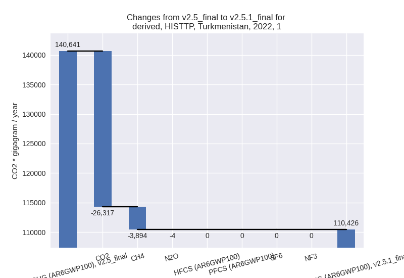
For 1990-2022 the changes per gas are:
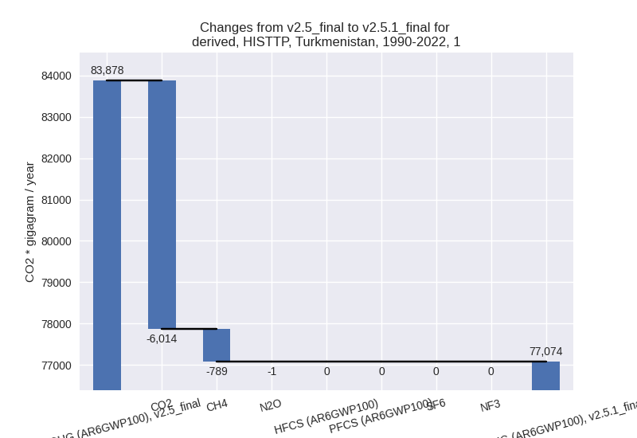
The changes come from the following subsectors:- 1.A: Total sectoral emissions in 2022 are 69514.15
Gg CO2 / year which is 63.0% of category 1 emissions. 2022 Emissions
have changed by -27.5% (-26331.49 Gg
CO2 / year). 1990-2022 Emissions have changed by -11.3% (-6018.90 Gg CO2 / year). For 2022
the changes per gas
are:
For 1990-2022 the changes per gas are:
There is no subsector information available in PRIMAP-hist. - 1.B.1: Total sectoral emissions in 2022 are 39.16
Gg CO2 / year which is 0.0% of category 1 emissions. 2022 Emissions have
changed by inf% (39.16 Gg CO2 /
year). 1990-2022 Emissions have changed by inf% (27.35 Gg CO2 / year). For 2022 the
changes per gas
are:

For 1990-2022 the changes per gas are:
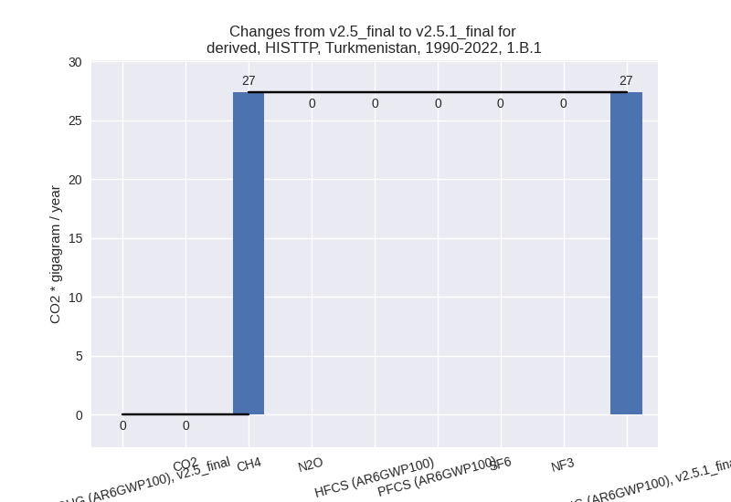
There is no subsector information available in PRIMAP-hist. - 1.B.2: Total sectoral emissions in 2022 are
40872.82 Gg CO2 / year which is 37.0% of category 1 emissions. 2022
Emissions have changed by -8.8%
(-3922.36 Gg CO2 / year). 1990-2022 Emissions have changed by -2.6% (-812.50 Gg CO2 / year). For 2022
the changes per gas
are:
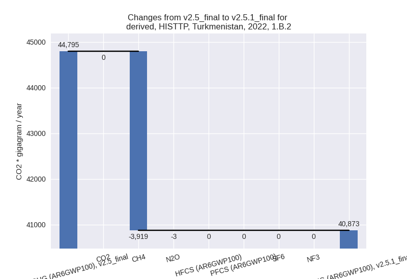
For 1990-2022 the changes per gas are:
There is no subsector information available in PRIMAP-hist.
- 1.A: Total sectoral emissions in 2022 are 69514.15
Gg CO2 / year which is 63.0% of category 1 emissions. 2022 Emissions
have changed by -27.5% (-26331.49 Gg
CO2 / year). 1990-2022 Emissions have changed by -11.3% (-6018.90 Gg CO2 / year). For 2022
the changes per gas
are:
- 2: Total sectoral emissions in 2022 are 2998.31 Gg
CO2 / year which is 2.3% of M.0.EL emissions. 2022 Emissions have
changed by -11.0% (-371.70 Gg CO2 /
year). 1990-2022 Emissions have changed by -6.9% (-133.95 Gg CO2 / year). For 2022
the changes per gas
are:
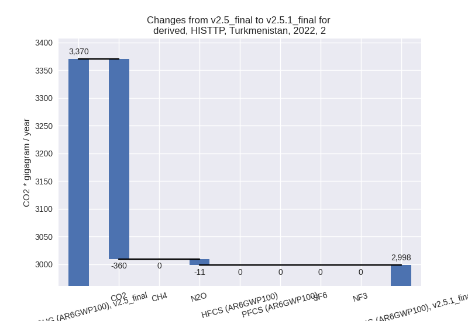
For 1990-2022 the changes per gas are: - M.AG: Total sectoral emissions in 2022 are 13069.93 Gg CO2 / year which is 10.2% of M.0.EL emissions. 2022 Emissions have changed by -0.2% (-31.99 Gg CO2 / year). 1990-2022 Emissions have changed by 1.4% (129.89 Gg CO2 / year).
- 4: Total sectoral emissions in 2022 are 1988.21 Gg CO2 / year which is 1.5% of M.0.EL emissions. 2022 Emissions have changed by -0.1% (-2.00 Gg CO2 / year). 1990-2022 Emissions have changed by -0.0% (-0.06 Gg CO2 / year).
- 5: Total sectoral emissions in 2022 are 218.87 Gg
CO2 / year which is 0.2% of M.0.EL emissions. 2022 Emissions have
changed by 7.6% (15.46 Gg CO2 /
year). 1990-2022 Emissions have changed by 0.4% (0.47 Gg CO2 / year). For 2022 the
changes per gas
are:
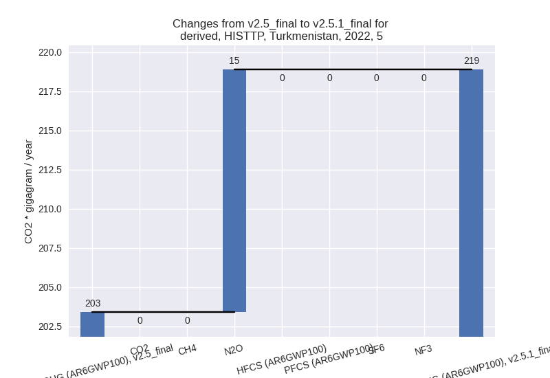